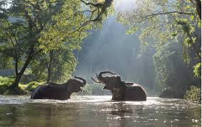
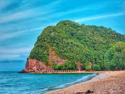

About Terengganu
Terengganu, a state located on the east coast of Peninsular Malaysia, is a region rich in cultural heritage and natural beauty. It boasts a stunning coastline dotted with pristine beaches, clear blue waters, and charming fishing villages. Terengganu is also known for its unique traditional crafts, such as intricate batik and silverware, and its vibrant cultural festivals. Visitors can explore the state's lush rainforests, picturesque islands like Pulau Redang, and historical sites, making Terengganu a captivating destination for those interested in both relaxation and cultural experiences.
Top Attractions
Pulau Redang
Pulau Redang is a picturesque island located off the east coast of Malaysia, celebrated for its breathtaking natural beauty. Known for its pristine white sandy beaches, crystal-clear turquoise waters, and vibrant coral reefs, it offers an idyllic retreat for nature lovers and adventure seekers alike. The island is renowned for its exceptional snorkeling and diving opportunities, where visitors can explore colorful marine life and underwater ecosystems. With its serene atmosphere and stunning landscapes, Pulau Redang is a perfect destination for those looking to escape and immerse themselves in paradise.

Taman Negara National Park
Taman Negara is Malaysia's premier rainforest reserve, renowned for its vast biodiversity, ancient rainforests, and thrilling activities like canopy walks and wildlife spotting.

Bukit Keluang
Bukit Keluang is a scenic hill in Terengganu with rugged terrain and breathtaking views of the coastline, making it a popular spot for hiking and enjoying panoramic vistas of the South China Sea.

Cultural Highlights
Terengganu’s cultural highlights include its traditional crafts such as intricate batik and silverwork, along with vibrant festivals like the Terengganu International Squid Festival, which showcase the state's rich heritage and local traditions.